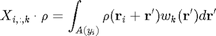
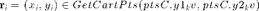
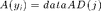
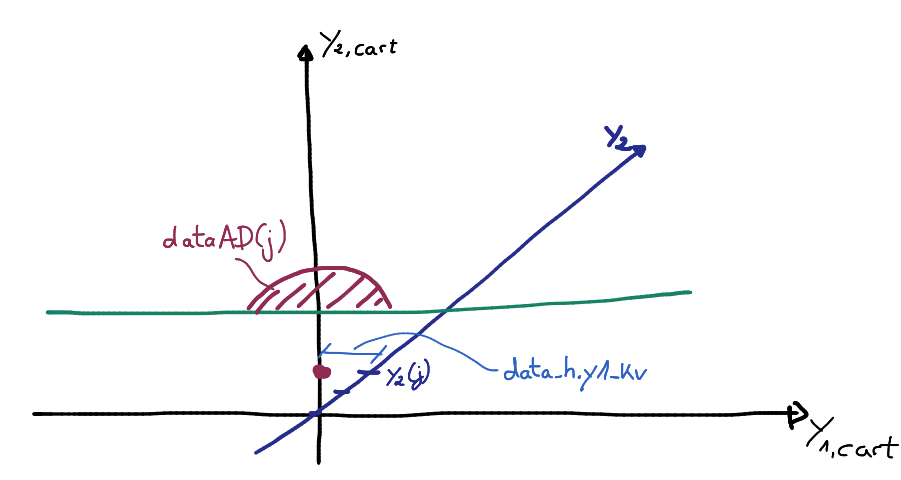
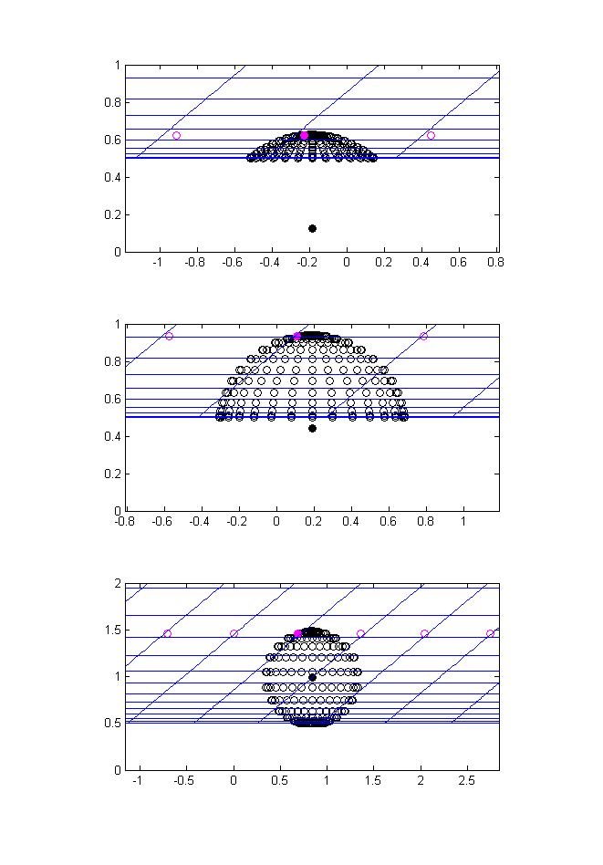

Contents
function X = Conv_LinearGridX(this,ptsC,dataAD,weights)
Input
- ptsC - structure with the following members: ('y1_kv','y2_kv','y1','y2') where y1_kv = kron(y1,ones(N2,1)) is not in cartesian coordinate system. The cartesian coordinates can be obtained by the use of the method GetCartPts(ptsC.y1_kv,ptsC.y2_kv) = ptsC_Cart
- dataAD - the points ptsC are organized in a grid. In cartesian coordinates, let the y-coordinate layers be 'Y2_Cart'. In order to compute the convolution around the points defined through ptsC_Cart, it is needed to integrate over an area, which is defined through dataAD. In particular, if ptsC_Cart.y2_kv == Y2_Cart(j), then the are to be integrated over is (in cartesian coordinates) (dataAD(j).pts.y1_kv + ptsC_Cart.y1_kv, dataAD(j).pts.y2_kv) The relative distance (dataAD(j).pts.y1_kv,dataAD(j).pts.y2_kv-ptsC_Cart.y2_kv) is given as the structure 'ptsPolLoc' in polar coordinates.
- weights - a cell with a list of functions which get a structure with two arrays [y1_kv,y2_kv] as input and returns one array of same size. [y1_kv,y2_kv] represents a point in polar coordinates, representing the radial and angular component, respectively.
Output

for  and

where j is such that GetCartPts(0,ptsC.y2(j)) == y_i.
Initialization
We compute of the coordinates of the points in dataAD in the skewed grid, centered around the point (0,y2) in skewed coordinates.
This is done such that not the absolute value data.ptsOr.y1_kv is added to ptsC.y1(i1Pts);, but the relative y1-distance with respect to the respective center of the shape!

m = length(ptsC.y1_kv);
m1 = length(ptsC.y1);
m2 = m/m1;
noW = numel(weights);
X = zeros(m,this.M,noW+1);%always include unity weight
checkSum = zeros(m,1);
ptsC_Cart = GetCartPts(this,zeros(m2,1),ptsC.y2); %Cartesian coordinates of the y2-computational axis
Interp2 = zeros(length(dataAD(1).pts.y1_kv),length(this.Pts.x2));
for i2Pts = 1:m2
%Points which are to be integrated over are stored in dataAD(i2Pts)
% -> dataAD(i2Pts).pts are given in cartesian coordinates
% -> they are for y1Cart = 0 and y2Cart = ptsC_Cart(i2Pts).
% -> in computational variables, these points correspond with
dataAD(i2Pts).ptsOr = GetInvCartPts(this,dataAD(i2Pts).pts.y1_kv,dataAD(i2Pts).pts.y2_kv);
% -> They are centered around
data_h = GetInvCartPts(this,0,ptsC_Cart.y2_kv(i2Pts));
% -> for any other y1Cart', the points have to be translated
% accordingly
% -> so for point y1Cart', consider points:
% dataAD(i2Pts).pts.y1_kv + y1Cart'
% -> in computational variables, this translation is given by
% ptsC.y1_kv + data.ptsOr.y1_kv, where
dataAD(i2Pts).ptsOr.y1_kv = dataAD(i2Pts).ptsOr.y1_kv - data_h.y1_kv;
end
Demonstration
(with Config_2014_2_12_10_1) [~,idx1] = min(abs(ptsC.y1)); figure('color','white'); subplot(3,1,1); plotDemonstration(4,60,idx1); xlim([(-1+ptsCC.y1_kv) (ptsCC.y1_kv+1)]); ylim([0 1]); pbaspect([2 1 1]);
subplot(3,1,2); plotDemonstration(ceil(length(dataAD)/2),60,idx1); xlim([(-1+ptsCC.y1_kv) (ptsCC.y1_kv+1)]); ylim([0 1]); pbaspect([2 1 1]);
subplot(3,1,3); plotDemonstration(length(dataAD),60,idx1); xlim([(-2+ptsCC.y1_kv) (ptsCC.y1_kv+2)]); ylim([0 2]); pbaspect([2 1 1]);

- blue lines represent gird lines of the class 'this'
- black filled points : point of ptsC around which is integrated
- black hollow points are points [dataAD(i).pts.y1_kv,dataAD(i).pts.y2_kv], shifted in the direction parallel to the wall so they are centered at ptsC, for three exemplaric values of i
- magenta points are at one height, such that the same interpolation matrix in y_2-direction can be used
Iteration through y_2 - levels of ptsC
First, we computate the interpolation in y2-direction for each point in data.
Second, we iterate through y1-levels of ptsC
for i2Pts = 1:m2 data = dataAD(i2Pts); for i = 1:length(data.pts.y1_kv) interp2 = CompSpace2(this,data.ptsOr.y2_kv(i)); Interp2(i,:) = barychebevalMatrix(this.Pts.x2,interp2); end % Iterate through y_1 - levels of ptsC (in y_2 - loop) for i1Pts = 1:m1
if(data.area == 0) continue end % Shift points of data in y1-direction to match ptsC if(ptsC.y1(i1Pts)==Inf) pts.y1_kv = Inf(size(data.ptsOr.y1_kv)); elseif(ptsC.y1(i1Pts)==-Inf) pts.y1_kv = -Inf(size(data.ptsOr.y1_kv)); else pts.y1_kv = data.ptsOr.y1_kv + ptsC.y1(i1Pts); end
Interpolation in y1 and combination of y1/y2 interpolations
Go through all (shifted) points of data, compute interpolation matrix in y1-direction, and combine with interpolation in y2-direction computed previously, to get full interpolation matrix
IP = zeros(length(pts.y1_kv),this.N1*this.N2);
for i =1:length(pts.y1_kv)
interp1 = CompSpace1(this,pts.y1_kv(i));
Interp1 = barychebevalMatrix(this.Pts.x1,interp1);
% kron form of the two interpolations
IP(i,:) = kronecker(Interp1,Interp2(i,:));
end
Computation of convolution
iPts = (ptsC.y1_kv == ptsC.y1(i1Pts)) & (ptsC.y2_kv == ptsC.y2(i2Pts));
X(iPts,:,1) = ones(sum(iPts),1)*(data.int*IP);
for k = 1:noW
f = str2func(weights{k});
X(iPts,:,1+k) = ones(sum(iPts),1)*((data.int.*f(data.ptsPolLoc)')*IP);
end
checkSum(iPts) = data.area;
end end %********************************************************** %********************************************************** %Test: [errAD,ierrAD] = max(abs(checkSum - sum(X(:,:,1),2))); y1err = ptsC.y1_kv(ierrAD); y2err = ptsC.y2_kv(ierrAD); PrintErrorPos(errAD,'Max. Error in Conv_LinearGridX',y1err,y2err); %********************************************************** function plotDemonstration(idx,idx2,idx1) ptsCC = GetCartPts(this,ptsC.y1(idx1),ptsC.y2(idx)); plot(ptsCC.y1_kv+dataAD(idx).pts.y1_kv,dataAD(idx).pts.y2_kv,'ok'); hold on; plot(ptsCC.y1_kv,ptsCC.y2_kv,'ok','MarkerFaceColor','k'); markCAll = (ptsC.y2_kv == ptsC.y2(idx)); ptsCCAll = GetCartPts(this,ptsC.y1_kv(markCAll)+dataAD(idx).ptsOr.y1_kv(idx2),... dataAD(idx).ptsOr.y2_kv(idx2)); plot(ptsCCAll.y1_kv,ptsCCAll.y2_kv,'om'); markCAll = ((ptsC.y2_kv == ptsC.y2(idx)) & ((ptsC.y1_kv == ptsC.y1(idx1)))); ptsCCAll = GetCartPts(this,ptsC.y1_kv(markCAll)+dataAD(idx).ptsOr.y1_kv(idx2),... dataAD(idx).ptsOr.y2_kv(idx2)); plot(ptsCCAll.y1_kv,ptsCCAll.y2_kv,'om','MarkerFaceColor','m'); PlotGridLines(this); end
end
The class ConvolutionFiniteSupport has no property or method named 'Conv_LinearGridX'.